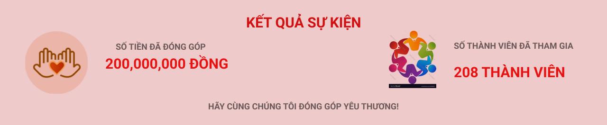

Đông ấm
Một mùa đông nữa lại đến rồi mọi người ạ. Trong những tháng cuối năm này, cái lạnh ở miền Bắc thật sự là khắc nghiệt, đặc biệt là ở các tỉnh miền núi, nơi mà người dân còn có rất nhiều khó khăn trong cuộc sống. Chính vì vậy, vào thời điểm này, Đông Ấm được tổ chức để mỗi người chúng ta có thể góp một chút tình cảm của mình gửi đến những nơi vùng sâu, vùng xa của Tổ Quốc. "Chút tình cảm" đấy có thể là những chiếc áo ấm, chiếc chăn bông, dụng cụ học tập cho các em nhỏ... tuy không nhiều về vật chất nhưng lại có giá trị tinh thần vô cùng to lớn, qua đó thấy được tình cảm ấm áp của mọi người trao nhau
Đối với anh em trong Đội, khi tham gia hoạt động tình nguyện này cũng là cơ hội để chúng ta xích lại và gắn kết với nhau hơn Thật tuyệt vời khi anh em ta ngồi với nhau quanh đống lửa hồng, ngân nga những bài hát và chia sẻ những tâm sự với nhau....Và bên cạnh đó còn rất nhiều những hoạt động ý nghĩa khác chắc chắn sẽ để lại trong lòng mỗi người những cảm xúc vô cùng sâu sắc
28/12/2023 - 1/1/2023 | Thử thách đã kết thúc
